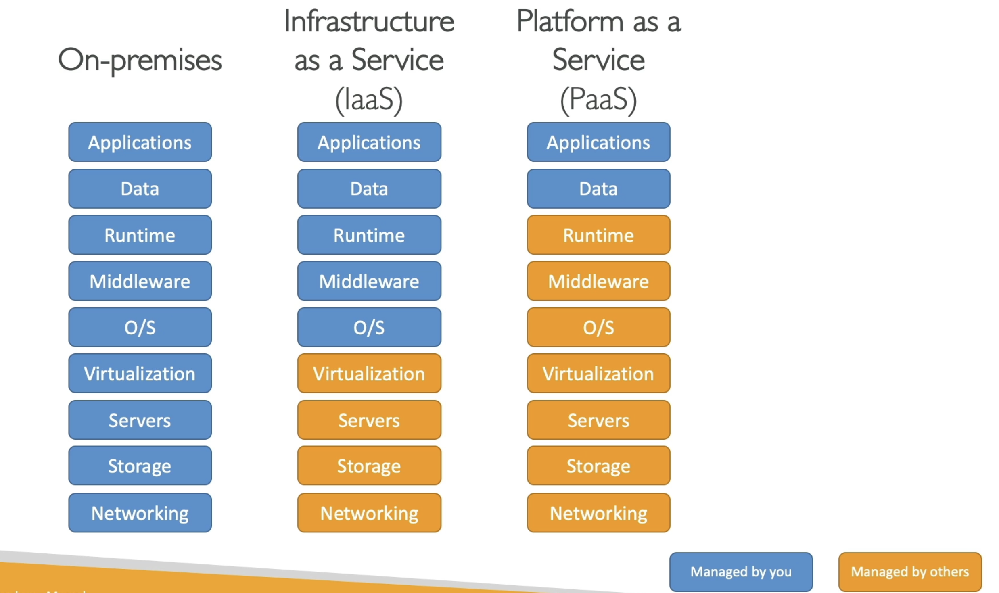

Types of Cloud Computing
1. Infrastructure as a Service (IaaS)
-
There are the building blocks for Cloud IT
-
With the IaaS, we are going to provide networking, computers, and data storage space in its raw form
-
Using this building blocks (like Legos), we will get High Level of Flexibility
-
With this, we can easily migrate from Traditional on Premises-IT to Cloud
2. Platform as a Service (PaaS)
-
In this, we are going to remove the need for your organization to manage the underlying infrastructure
-
You can focus on the deployment and management of your applications
3. Software as a Service (SaaS)
- This is a completed product that is going to be run and managed by the Service Provider
So if you want to compare all of these things:
Let us take an example → On Premises, you are going to manage everything. This will involve your:
-
Applications
-
Data
-
Runtime
-
Middleware
-
OS (Operating System)
-
Virtualization
-
Servers
-
Storage
-
Networking
With IaaS (Infrastructure as a Service), we manage:
-
Applications
-
Data
-
Runtime
-
Middleware
-
OS
While AWS manages:
6. Virtualization
7. Servers
8. Storage
9. Networking
With the PaaS (Platform as a Service), we manage even less, so everything from the runtime to the networking is managed by AWS and the only thing we care about when we use a platform as a service is our application and our data, meaning:
- Application (we will manage this)
- Data (we will manage this)
- Runtime (AWS will handle it)
- Middleware (AWS will handle it)
- OS (AWS will handle it)
- Virtualization (AWS will handle it)
- Servers (AWS will handle it)
- Storage (AWS will handle it)
- Networking (AWS will handle it)
See the image below for better understanding:

Finally if you are using Software as a service (SaaS), Everything is going to be managed by the AWS

Examples of Cloud Computing Types
Well with the IaaS, we can use:
- EC2 (With AWS)
- GCP, Azure, Rackspace, Digital Ocean, Linode
With PaaS, also exists on AWS, and example include:
- Elastic Beanstalk (on AWS)
- Outside of AWS, the examples include: Heroku, Google App Engine (GCP), Windows Azure (Microsoft)
For SaaS, we will also have this on AWS, that represents many services:
- Rekognition for ML (AWS service)
- Real world applications like Gmail (Google App), Dropbox, Zoom for Meetings
Pricing of the Cloud
- AWS has 3 pricing fundamentals. It will follow the pay-as-you-go pricing model
- For Compute: (Since for compute, it is involved in various services)
- We are going to pay for exact compute time

- We are going to pay for exact compute time
- For Storage:
- We are going to pay for the exact amount of the data stored in the cloud
- We are going to pay for the exact amount of the data stored in the cloud
- For Networking:
- We are going to only pay when the data leaves the cloud.
- Any data that goes into the cloud is Free. (This solves the expensive issue of Traditional IT)
- We are going to only pay when the data leaves the cloud.